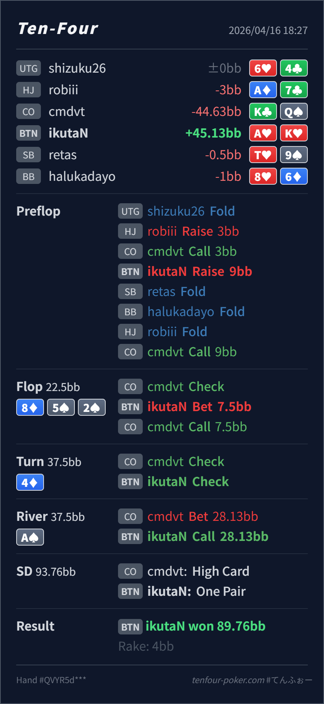

Preflop
良いが size 小さめA♥K♥ は BTN の明確な squeeze 上位です。
主論点は、HJ open に CO が cold call した spot で BTN の A♥K♥ をどの size で squeeze するかと、8♦ 5♠ 2♠ / 4♦ / A♠ で river lead に対して top pair top kicker をどこまで素直に bluff-catch するかです。結論は、flop c-bet、turn check、river call はかなり自然で、いちばん見直したいのは preflop の squeeze size です。9BB はやや小さく、CO に広く continue を許しやすい一方、river の A♠ は Hero range にかなり有利なので、A♥K♥ の call は取りこぼしを防ぐ良い反応です。
A♥K♥K♣Q♠8♦ 5♠ 2♠ / 4♦ / A♠A♥K♥ は明確な squeeze 上位です。ただし 9BB は dead money を拾うにはやや小さく、CO の suited broadway、middle pair、spade 系 continue を広く残しやすいです。8♦ 5♠ 2♠ は CO 側に set や draw がありつつも、BTN は overpair と高カード優位を持っています。A♥K♥ は no-spade でも small c-bet に無理なく入る combo です。4♦ で flop call range は 88-66, A5s/A4s, spade draw, 76s, broadway spade に寄りやすく、この card は CO 側にもかなり触れます。A♥K♥ は equity も押し出し性能も中途半端なので、ここで無理に 2barrel せず check へ回るのが自然です。A♠ は Hero の delayed range にかなり有利で、CO の large lead は A5s/A4s の thin value と missed spade / broadway bluff が混ざりやすいです。A♥K♥ は top pair top kicker で、しかも AK/AQ の強い value を一部 block しており、かなり素直な call 候補です。A♥K♥K♣Q♠3BB, CO call 3BB, BTN raise 9BB, HJ fold, CO call8♦ 5♠ 2♠ / 4♦ / A♠7.5BB, CO call28.13BB, BTN callA, Villain high card K
良いが size 小さめA♥K♥ は BTN の明確な squeeze 上位です。
8♦ 5♠ 2♠良いA♥K♥ は no-spade でも high-card overcards として small c-bet に入れやすい combo です。
4♦良いA♥K♥ はまだ A-high 止まりで、押し切るだけの equity も block も十分ではありません。
A♠かなり良いA♥K♥ は top pair top kicker で、river の bluff-catch としてかなり上位です。
| 論点 | その場で起きがちな見え方 | どこがズレたか | 次回の基準 |
|---|---|---|---|
| preflop の squeeze size | AKs なので 3bet できていれば十分に見える | open + call に対して size が小さいと、dead money を十分に回収できず、CO の広い continue をそのまま許しやすいです。A♥K♥ のような上位は、IP でももう一段大きくしてよいです。 | squeeze は 強い hand を入れるか だけでなく open + call に何BB返すと continue が歪むか まで見る |
river の A♥K♥ call | turn を check back したので、river の大きい lead に弱く見えて fold したくなる | A♠ は Hero 側の delayed value をかなり押し上げます。CO に value lead はありますが、preflop から残る broadway air や missed spade も十分あり、A♥K♥ はその中でかなり上位の bluff-catch です。 | turn check-back 後でも、自分の range に有利な river では素直に bluff-catch を残す |
| ストリート | その時点の見え方 | 実ハンドの位置づけ | 評価 | その場の一手 |
|---|---|---|---|---|
| Preflop | HJ open + CO cold call には medium pair、suited broadway、suited connector がかなり残ります。 | A♥K♥ は BTN の明確な squeeze 上位です。 | 良いが size 小さめ | squeeze 自体は自然です。9BB よりもう一段大きくして、dead money 回収と fold equity を増やしたいです。 |
Flop 8♦ 5♠ 2♠ | CO の call range には pair、spade draw、76s, 一部 A5s/A2s が残ります。一方で BTN は overpair と高カード優位を保っています。 | A♥K♥ は no-spade でも high-card overcards として small c-bet に入れやすい combo です。 | 良い | 7.5BB の small c-bet は自然です。ここは素直に打って問題ありません。 |
Turn 4♦ | flop call 後の CO range は low pair + draw が多く、この 4♦ は OOP 側の continue にも触れます。 | A♥K♥ はまだ A-high 止まりで、押し切るだけの equity も block も十分ではありません。 | 良い | check back が自然です。無理に 2barrel へ寄せなくて大丈夫です。 |
River A♠ | CO の lead には A5s/A4s の value、5x の無理な thin value、missed spade や broadway bluff が混ざりえます。A♠ 自体は Hero range にかなり有利です。 | A♥K♥ は top pair top kicker で、river の bluff-catch としてかなり上位です。 | かなり良い | ここは素直に call でよいです。raise は薄く、fold は取りこぼし寄りです。 |
3bet するか だけでなく、open + call に対して size が十分か を先に点検すると preflop から EV を落としにくいです。A♥K♥ のような no-draw high card は、flop で small c-bet、turn で諦める設計がかなり自然に入ります。check-back 後でも、river が自分の range に強く当たるなら、top pair top kicker は受け身に fold しすぎない方が安定します。check-back 後の OOP river lead 自体は実戦で増えやすいです。ただし今回の A♠ は IP 側にかなり有利なので、CO の bluff 密度も十分残りやすく、A♥K♥ は取りこぼしたくありません。KQ/QJ 系 bluff は理論より増えやすく、今回の call はさらにしやすくなります。